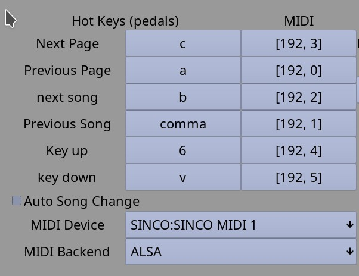

Previous Page || Main Page || Next Page
The Hotkeys and MIDI control section:
The default hot key setting came from my personal USB pedal which has three pedals: a, b and c. Then from there 6 Has ^ above it and v is opposite then , has < Depending on the pedal, arrow keys would be better. In any case click on the function you wish to change and when the dialog opens press the key or pedal you wish to attach to that function to set it.
Shifted or modified keys will not work. (who wants to deal with hitting two keys in the middle of a song?) Arrow keys can get selected but do not seem to work (page up and down do). Yes, this is a bug, but not priority at this time.
The Auto song change checkbox is for use with a two button pedal. At the end of the song, an extra page forward will act as a next song and at the beginning of the song, the previous page button will go to previous song. Beware this can be confusing but if a two button unit is all you have, it will work.
The midi section is much like the hot key section, select the function and press the pedal to send the MIDI event to set. Pressure, pitch bend, and keyon with velocity of 0 are filtered out. So keyon, key off, program, CC, etc. all work. I found the M-Vave Chocolate Plus is small enough to pack while giving useful midi codes out of the box. It is also less expensive than many USB pedals.
First use the MIDI backend to choose between ALSA and Jack. Most modern Linux systems with PipeWire have a Jack graph runnnig all the time and will show BlueTooth devices that are paired. Then use the device drop down to connect to the MIDI device you are using.
Previous Page || Main Page || Next Page